Accueil > Bibliographie
A lire dans cette rubrique :


Bibliographie
|
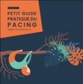 |

Adapter son rythme de vie en fonction de l' enveloppe énergétiqueLE guide "PACING" de L'ASFC Offert à tout adhérent ou sur simple demande |
|
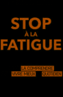 |
STOP à LA FATIGUE " mieux la comprendre pour mieux vivre au quotidien"Grégoire Cozon |
|
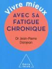 |
VIVRE MIEUX AVEC SA FATIGUE CHRONIQUEDr Pierre DANJEAN |
TEMOIGNAGE DE MALADE - Moi M' E.MDr K.N Hng le | |

|
TEMOIGNAGE DE MALADE - " A la recherche de ma santé perdue "Sophie Benarrosh |
|
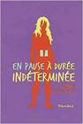 |
TEMOIGNAGE DE MALADE -"En pause à durée indéterminée"Céline French-Moulin |
|
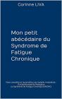 |
TEMOIGNAGE DE MALADE - Mon Petit abécédaire du Syndrome de Fatigue ChroniqueCorinne LIVA |
|
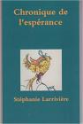 |
TEMOIGNAGE DE MALADE - Chronique de l' espéranceStéphanie LARRIVIERE |
|
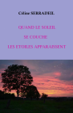 |
TEMOIGNAGE DE MALADE - Quand le soleil se couche les étoiles apparaissentCéline Serradeil |
TEMOIGNAGE DE MALADE - Le voyage interdit qui a redonné du sens à ma vieMarine BARNERIAS | |
TROUBLES INTESTINAUX 6 " La candidose chronique"Philippe Gaston Besson | |
|
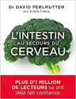 |
TROUBLES INTESTINAUX " L'intestin au secours du cerveau"Pr David Perlmutter |
|
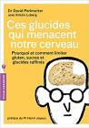 |
TROUBLES INTESTINAUX " Ces glucides qui menacent notre cerveau"Pr David Perlmutter |
|
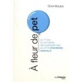 |
TROUBLES INTESTINAUX -Le SIBOTémoignage de Dora Moutot |
REFLUX GASTRIQUE " Soigner le reflux naturellement"Dr Martine Cotinat ( gastro-entérologue) | |
|
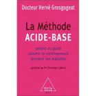 |
COMPRENDRE LE RAPPORT ACIDE/BASE " la méthode acide-base"Dr Philippe GROSCOGEAT |
|
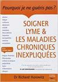 |
MALADIE DE LYME -"Soigner Lyme et les maladies inexpliquées"Dr Richard Horowitz |
EPUISEMARGULIES JOHANN L'observatoire | |
MALADIE DE LYME -"A la recherche de ma santé perdue"Témoignage de Sophie BENARROSH | |
|
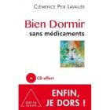 |
SOMMEIL - "Bien dormir sans médicaments" livre + CDClémence Peix Lavallée (Sophrologue) |
|
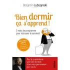 |
SOMMEIL - "Bien dormir ça s' apprend " Hypnose -livre + MP3Benjamin LUBSZYNSKI (Psychiatre) |
|
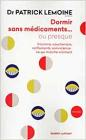 |
SOMMEIL - "Bien dormir sans médicaments ou presque "Dr Patrick Lemoine ( psychiatre) |
Méditation/Sophrologie Douleur -Gestion du stress - "Méditer c' est se soigner"Dr Frédéric Rosenfeld | |
Méditation/Sophrologie Douleur -Gestion du stress - " Le temps de méditer "Christophe André ( psychiatre) | |
|
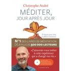 |
Méditation/Sophrologie Douleur -Gestion du stress -"Méditer jour après jour"Christophe André ( psychiatre) |
Au coeur de la tourmente la pleine conscience ( technique MBSR)Jon Kabat Zinn ( psychiatre) | |
|
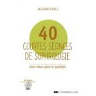 |
Douleur /Stress sophrologie " 40 courtes séances de sophrologie" + CDAlain ZUILI ( Soprhologue) |
|
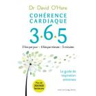 |
COHERENCE CARDIAQUE " 3.6.5 Cohérence cardiaque"David O'Hare |
Technique/Méthode E.M.D.R. "Dépasser le passé"Francine SHAPIRO | |
|
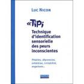 |
Méthode TIPI- (technique d'identification des peurs inconscientes)Luc Nicon |
Expliquer la maladie chronique aux enfants "KRRRONIK la mystérieuse mal à partout de ma maman"Annabelle Langlais & Gaëlle Gill |
A lire dans cette rubrique :

- inserm.fr/actualites/ru
- alliance-maladies-rares
- eurordis.org
- orpha.net/consor/cgi-bi
- maladiesraresinfo.org
- plateforme-maladiesrare
- has-sante.fr
- fnath.org
- france-assos-sante.org/
- sfr.larhumatologie.fr
- hemochromatose.fr
- association-afvd.com/
- afgs-syndromes-secs.org
- droitsdesmalades.fr/
- sante.gouv.fr
- phoenixrising.me
- investinme.org
- iacfsme.org/
- solvecfs.org/
- meassociation.org.uk/
- https://aqem.org
 Ce site respecte les
principes de la charte HONcode.
Ce site respecte les
principes de la charte HONcode.
Vérifiez ici.
Dernière mise à jour le 12/01/2016
Copyright ASFC ©2012-2026 mentions légales - Réalisé par OPALE WEB - OPALIS'TIC